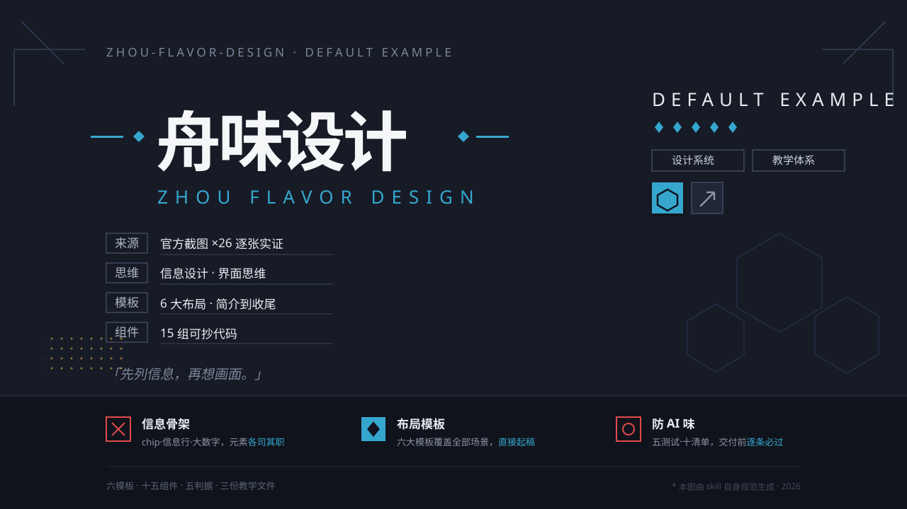

| 画面区域 | 组件出处 components.md | 教程步骤 tutorial.md |
|---|---|---|
| 四角饰线 | §1 角饰线 | Step 4 铺基座 |
| 六边形线框（右下，主题符号） | 皮肤机制 §3：符号=六边形 | Step 2 定皮肤 |
| 横线+菱形+「舟味设计」92px/900/-4 + 拉丁宽字距副标 | §10 标题组 | Step 5 标题系统 |
| 来源/思维/模板/组件 四条信息行 | §3 信息行 | Step 6 信息区 |
| DEFAULT EXAMPLE + 菱形星 + 边框chip×2 + 图标方块 | §2 chip / §11 图标方块 | Step 6 信息区右列 |
| 宋体斜体引言「先列信息，再想画面。」 | §13 宋体装饰行 | Step 7 功能区 |
| 底部深色带 + 三条能力条目（红框/青实图标交替 + 青色tspan高亮） | §11 能力条目 | Step 7 功能区 |
| 参数行 + 右对齐免责小注 | 官方惯例（*注） | Step 7 功能区 |
| 半调点块（左中，唯一一块） | §14 质感层 | Step 4 铺基座 |